Un thème de l'épreuve d'analyse de la vision (U5, coefficient 6) du BTS Opticien-Lunetier. Il est tombé à chacune des 4 sessions analysées. Sur cette page : 4 définitions à savoir et 3 questions corrigées.
Différence de réfraction entre les deux yeux, notable à partir d'environ 1 δ.
Pour comprendre : Elle est axile si les longueurs d'œil diffèrent, de puissance si ce sont les vergences d'œil.
À savoir par cœur
Aniséiconie
Probable
Utilisée dans le sujet 2024
Différence de taille (ou de forme) des images des deux yeux.
Pour comprendre : Moins de 3 % : pas de gêne ; 3 à 10 % : la fusion peut être gênée ; au-delà de 10 % : fusion le plus souvent impossible.
À savoir par cœur
Amblyopie fonctionnelle
★ Tombée en 2023
Utilisée dans le sujet 2017
Baisse d'acuité d'un œil, sans lésion, due à son manque d'utilisation pendant la période de maturation visuelle.
Pour comprendre : L'image était floue, déviée ou neutralisée. Elle se rattrape d'autant mieux qu'elle est prise en charge tôt.
À savoir par cœur
Effet prismatique (règle de Prentice)
Probable
Utilisée dans les sujets 2022, 2024
Quand la ligne de regard ne passe pas par le centre optique, le verre agit comme un prisme : P (Δ) = décentrement (cm) × |D|.
Pour comprendre : Chez l'anisométrope, la différence entre les deux yeux peut faire voir double.
À savoir par cœur
Trois questions corrigées
Cherche d'abord ta réponse, puis ouvre la correction.
Type BTS 2024 · Niveau facile
Pour une anisométropie de PUISSANCE, quel équipement réduit le plus l'aniséiconie ?
Des lunettes à 15 mm
Des lentilles de contact
Des lunettes à 25 mm
Aucun équipement
Voir la correction de la question 1
Réponse B. Des lentilles de contact
L'aniséiconie induite dépend de la distance compensation-œil. En lentilles, cette distance passe d'environ 15 mm à moins de 2 mm : l'aniséiconie devient beaucoup plus faible. (Pour une anisométropie AXILE, la loi de Knapp favorise au contraire les lunettes placées au foyer objet de l'œil.)
Type BTS 2024 · Niveau moyen
Anisométropie de puissance : OD −0,50 et OG −5,50 (sphériques), verres à 14 mm de l'œil. Estimation de l'aniséiconie en lunettes ?
Environ 1,4 %
Environ 5 %
Environ 7 %
Environ 14 %
Voir la correction de la question 2
Réponse C. Environ 7 %
Anisométropie de puissance : les deux yeux ont la même longueur, l'aniséiconie axile est nulle. Aniséiconie induite ≈ distance verre-œil (cm) × différence des verres = 1,4 × 5 = 7 %, en faveur de l'OD (le moins myope voit plus gros). Repères : moins de 3 % = pas de gêne ; 3 à 10 % = gêne possible de la fusion ; plus de 10 % = fusion le plus souvent impossible.

Type BTS 2020 et 2024 · Niveau moyen · Calcul
OD −2,00 et OG −5,00 (sphériques). En lecture, le regard passe 8 mm sous les centres optiques. Calcule l'effet prismatique vertical différentiel.
Réponse attendue en Δ, arrondie à 0,1 près.
Voir la correction de la question 3
Réponse : 2,4 Δ.
Prentice, d en cm : OD 0,8 × 2 = 1,6 Δ ; OG 0,8 × 5 = 4,0 Δ. Verres divergents, regard sous le centre : base inférieure pour les deux. Différentiel = 4,0 − 1,6 = 2,4 Δ, base inférieure sur l'OG.
Le QCM compte 10 questions sur ce thème. Chacune est corrigée et expliquée, et celles que tu rates reviennent toutes seules à 1, 3, 7, 14 et 30 jours.